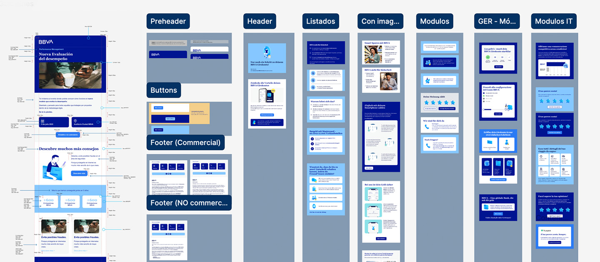
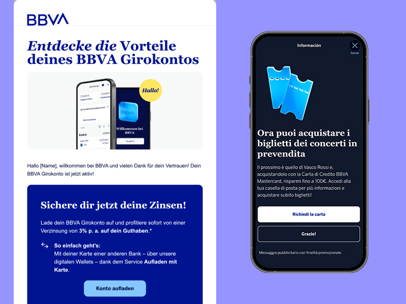
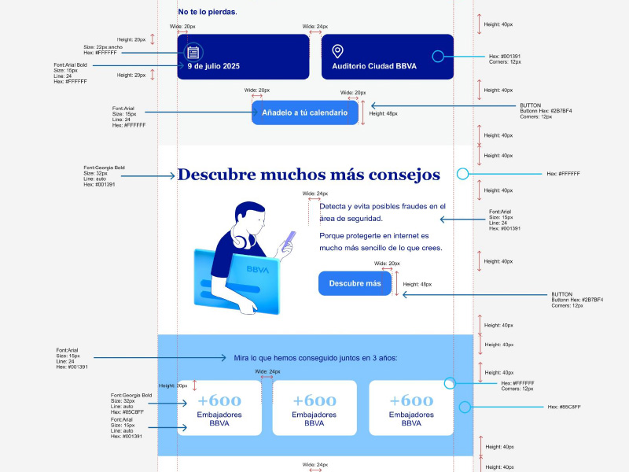
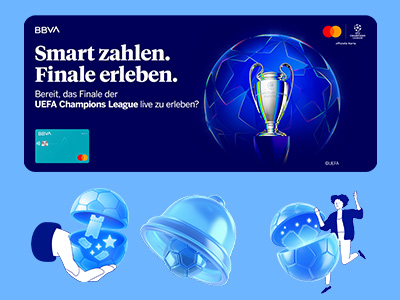

Con la implementación de una nueva identidad visual, el banco necesitaba reorganizar su sistema de mailings para garantizar coherencia, escalabilidad y correcta visualización en múltiples dispositivos.
With the implementation of a new visual identity, the bank needed to reorganize its mailing system to ensure coherence, scalability, and proper display across multiple devices.
El reto no era únicamente rediseñar piezas, sino estructurar un sistema que funcionara de forma consistente entre diseño, marketing y desarrollo.
The challenge was not just to redesign pieces, but to structure a system that worked consistently between design, marketing, and development.


01
Analicé los mailings existentes para identificar inconsistencias visuales, problemas de jerarquía y fricciones en la experiencia en desktop y mobile.
I analyzed existing mailings to identify visual inconsistencies, hierarchy issues, and friction points in the desktop and mobile experience.
02
Definí tipologías claras (informativos, comerciales y operativos) y diseñé una arquitectura modular basada en componentes reutilizables.
I defined clear typologies (informational, commercial, and operational) and designed a modular architecture based on reusable components.
03
Construí el sistema en Figma, documentando reglas, variantes y comportamientos para facilitar su uso por equipos internos y asegurar escalabilidad.
I built the system in Figma, documenting rules, variants, and behaviors to facilitate use by internal teams and ensure scalability.
04
Coordiné la implementación con desarrollo, validando el comportamiento en distintos dispositivos y optimizando flujos de producción entre diseño y marketing.
I coordinated implementation with development, validating behavior across different devices and optimizing production flows between design and marketing.

La implementación del sistema UI permitió transformar los mailings de piezas aisladas en un sistema escalable y consistente, alineado con identidad y objetivos de producto.
The UI system implementation transformed mailings from isolated pieces into a scalable, consistent system aligned with brand identity and product objectives.
Reducción en tiempos de producción de nuevas piezas
Reduction in production time for new pieces
Aumento en eficiencia operativa entre equipos mediante flujos optimizados
Increase in operational efficiency between teams through optimized workflows
Disminución de incidencias en implementación técnica
Decrease in technical implementation incidents
Nota: Resultados expresados en términos relativos por confidencialidad.
Note: Results expressed in relative terms for confidentiality.